CHAPTER 01 · 1/2
星辰风暴
中心五圈逐步扩散，81格各属于一个环；紫色星点、旋臂与格面波动。
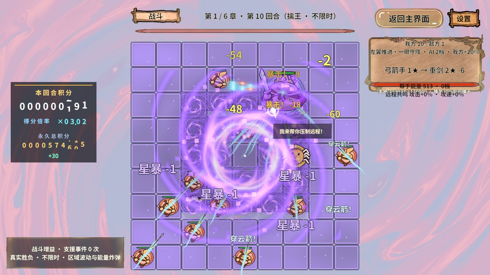
播放实际连续画面 · 18帧
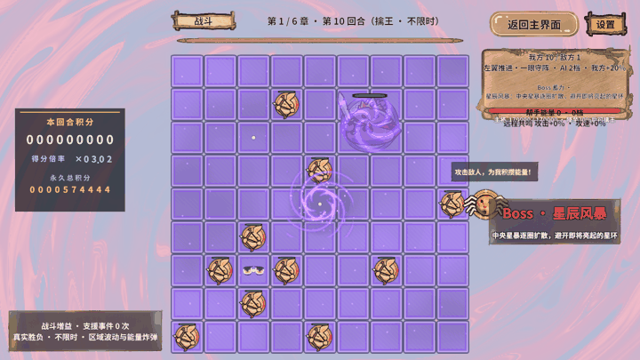
18个通用技能 + 每章2个专属技能。真实GM注入、自然对战、状态边界与资源回收分别验收。
功能专项通过；数值存在普通关失败及部分Boss战偏长，未宣称全部平衡达标。
每章自然对战实际技能种类
规则断言 / 图形专项断言通过
正常图形回合获胜，Boss 6/6
旧选招主要按“能打多少目标×权重”比较，全盘弹幕常年高分；早期章节还受UnlockChapter门槛限制。普通移动又被有攻击目标的分支挡住，Boss容易停在原地。
现在先过滤冷却、章号和合法目标，再优先选择使用次数较少的技能，同次数才比较战术分数。18种通用技能对全部章节开放，ExclusiveChapter只允许本章两招；狂暴仍按残血触发，黑洞仍要求存在成眼目标。独立移动周期在待机时执行，整块Boss身体经CanFit和Board.Move校验后换位，蓄力期间保持预警落点。
固定输入180秒自然FSM：六章各18种，位置数16 / 16 / 18 / 16 / 7 / 7；夹具Boss未残血，汲取和狂暴不触发。正常有伤害的图形对战和三种子服务回放中，各章均实际用出20种。这里没有用GM施法结果冒充自然AI覆盖。
| 验证层 | 方法 | 结果 |
|---|---|---|
| 规则专项 | 真实Service / FSM，固定输入、边界时间与取消清理；.NET及RevMCP Editor入口分别执行 | 224条通过 |
| 技能图形 | 常驻RevMCP → 正式进入Boss关卡 → 高生命视觉夹具 → 实际GM施法；PC AB冷启动 | 12招、71条通过，207张原始截图，12段GIF，新增错误0 |
| 正常图形对战 | 种子1029，真实EventSystem落牌、开始战斗/奖励GM；双方同受4倍时钟；不加血攻、不强制胜利 | 60轮覆盖，57胜3负；Boss 6/6获胜、每章20招；新增错误0 |
| 正常离线服务回放 | 种子3028 / 4028 / 5028；链接真实玩法源码与导表数据，无渲染 | 180轮177胜3负；18场Boss全胜，每场20招 |
| 旧Boss规则 | 针对章节技能池调整原有预期 | 9场景142条通过 |
| 旧全量战斗回归 | 本次重跑，未跳过失败 | 失败：VerifyFrequentEnemyDeployment“首手时刻到期真实提交一手”；与28日报告记录一致，未解决 |
| 资源与编译 | Excel真实导表、字体子集、项目Configure、PC Build/Copy | Unity编译无错误/警告；51包、15图集、260图片唯一覆盖；重复/循环/漏标/重名/Shader错误0 |
视觉夹具只保证技能有足够时间观察，不能用于胜率或三分钟结论。图形正常对战采用每章独立开局、章内继承阵容；失败后独立下一回合继续覆盖，不能把覆盖60轮称为连续通关。失败轮：4-2（18.75秒）, 4-3（22.81秒）, 6-1（48.44秒）。
正常图形六场平均205.68秒（3分26秒）；第四章262.81秒、第五章219.06秒偏长。三种子服务回放平均167.90秒（2分48秒），范围136.25～200.63秒。整体接近三分钟，但阵容、眼位与控制会影响时长，不保证每场180秒。
保留此前厚血低伤配置：Boss生命倍率65，攻击倍率0.35，百分比伤害对主将系数0.3；本次改动重点是技能轮换与专属效果，未用强制击杀锁定时长。
| 正常图形 | 模拟秒 | 不同技能 | 命中段事件 | 玩家数起→终 | 结果 |
|---|---|---|---|---|---|
| 第1章 | 184.38 | 20 | 62 | 14 → 17 | 获胜 |
| 第2章 | 184.69 | 20 | 58 | 16 → 18 | 获胜 |
| 第3章 | 182.50 | 20 | 60 | 16 → 16 | 获胜 |
| 第4章 | 262.81 | 20 | 79 | 14 → 8 | 获胜 |
| 第5章 | 219.06 | 20 | 65 | 14 → 17 | 获胜 |
| 第6章 | 200.62 | 20 | 61 | 14 → 17 | 获胜 |
BulletRing、Bombard、GravityWell、LaserSpin、BlinkBlast、Cleave、DoomSigil、FrostNova、MeteorShower、StarStorm、BlackHole、PoisonMarsh、FlameWall、Snipe、Summon、SoulDrain、Enrage、ChainLightning、IceLance、CrossLaser
BulletRing、Bombard、BlinkBlast、GravityWell、LaserSpin、MeteorShower、DoomSigil、Snipe、Cleave、SolarFlare、SunBrand、PoisonMarsh、IceLance、FrostNova、SoulDrain、Enrage、ChainLightning、CrossLaser、FlameWall、Summon
BulletRing、Bombard、BlinkBlast、LaserSpin、GravityWell、MeteorShower、FrostNova、Cleave、DoomSigil、Snipe、TidalSurge、Maelstrom、PoisonMarsh、SoulDrain、FlameWall、CrossLaser、ChainLightning、Enrage、IceLance、Summon
Bombard、LaserSpin、BulletRing、BlinkBlast、MeteorShower、Cleave、GravityWell、Snipe、SwampMaw、FrostNova、MireChains、DoomSigil、PoisonMarsh、FlameWall、SoulDrain、ChainLightning、IceLance、CrossLaser、Enrage、Summon
BulletRing、Bombard、LaserSpin、Cleave、BlinkBlast、GravityWell、FrostNova、DoomSigil、MeteorShower、Snipe、FrozenPrison、GlacialAegis、PoisonMarsh、Summon、IceLance、SoulDrain、FlameWall、ChainLightning、CrossLaser、Enrage
BulletRing、Bombard、LaserSpin、BlinkBlast、Cleave、GravityWell、MeteorShower、DoomSigil、Snipe、DivineCross、FrostNova、Sanctuary、PoisonMarsh、IceLance、SoulDrain、ChainLightning、FlameWall、Enrage、CrossLaser、Summon
| 服务回放 | 3028 / 4028 / 5028（秒） | 不同技能 |
|---|---|---|
| 第1章 | 164.38 / 152.50 / 136.25 | 20 / 20 / 20 |
| 第2章 | 166.56 / 146.25 / 196.56 | 20 / 20 / 20 |
| 第3章 | 146.25 / 163.12 / 164.38 | 20 / 20 / 20 |
| 第4章 | 196.56 / 168.12 / 152.81 | 20 / 20 / 20 |
| 第5章 | 162.50 / 185.94 / 185.00 | 20 / 20 / 20 |
| 第6章 | 200.62 / 170.00 / 164.38 | 20 / 20 / 20 |
Boss身体采用ArcanePiece涌能/冰壳，技能主体采用BossSkill程序化Shader，格面采用各章SurfaceShader参数与DOTween起伏。复用现有图集光晕，无新增外部图片下载或散图Texture加载。
GIF由本次真实Play连续截图缩放至720宽生成，12～20帧/段、展示间隔170ms；原采样按技能长度分配，GIF只用于观察动作顺序，不用它计时。精确控制时间由模拟时钟断言证明。截图只压缩，不裁剪、不拼造。
中心五圈逐步扩散，81格各属于一个环；紫色星点、旋臂与格面波动。


只锁定成眼棋群的小区域，缩入暗色视界，4秒后原身份、原位置返场；期间不可行动、不可被伤害。
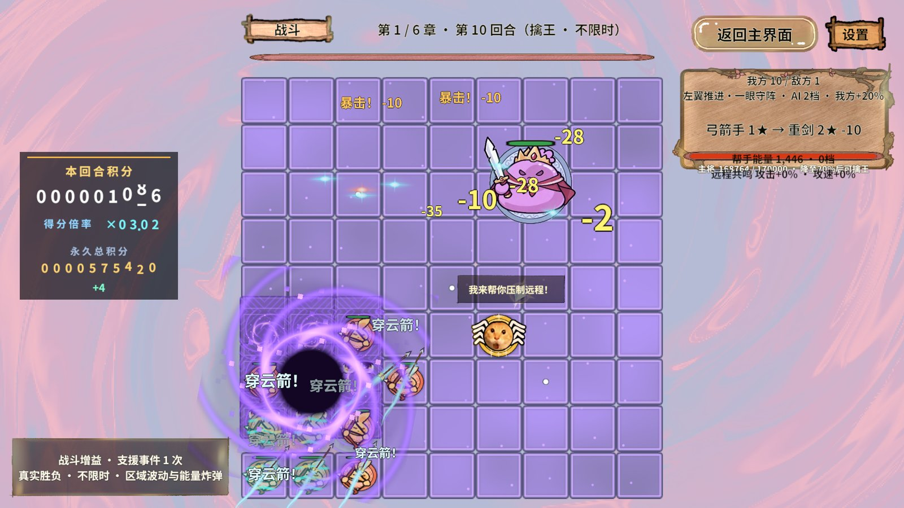
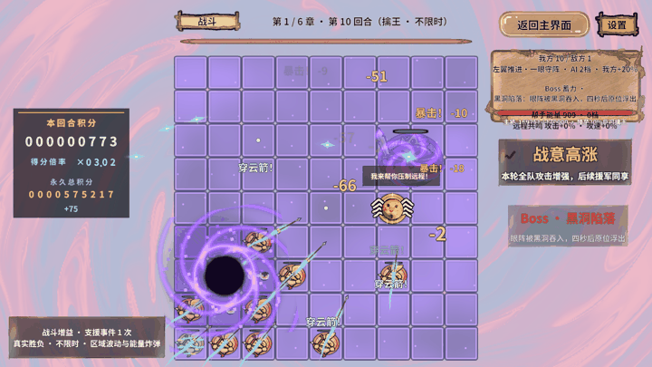
锁定5×5区域，日冕火舌持续4秒，每秒灼烧。
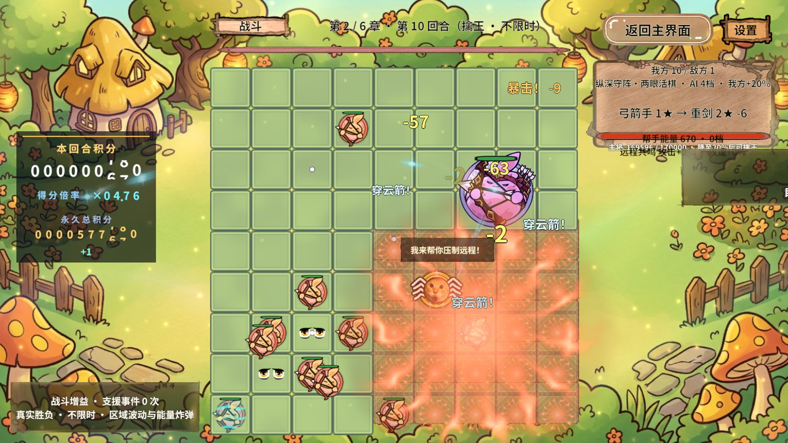
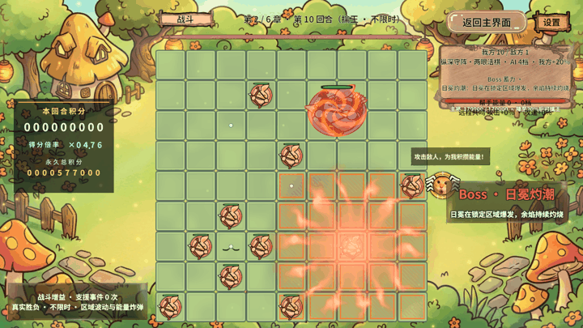
三个锁定目标逐个烙印，每个命中后灼烧5秒，标记与主特效对应实际落点。
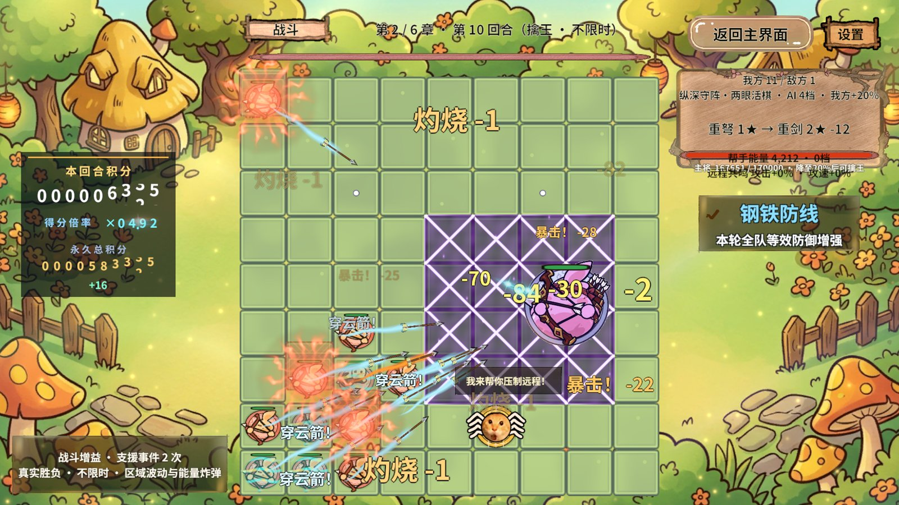
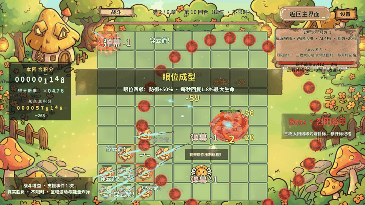
横排三段浪潮，每段尝试推移一格；合法空位才提交，边界或占格阻挡时留在原地。
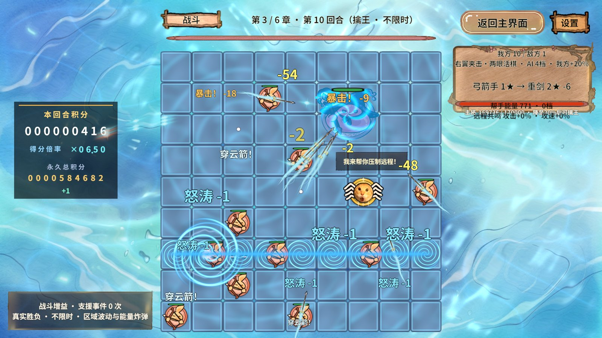
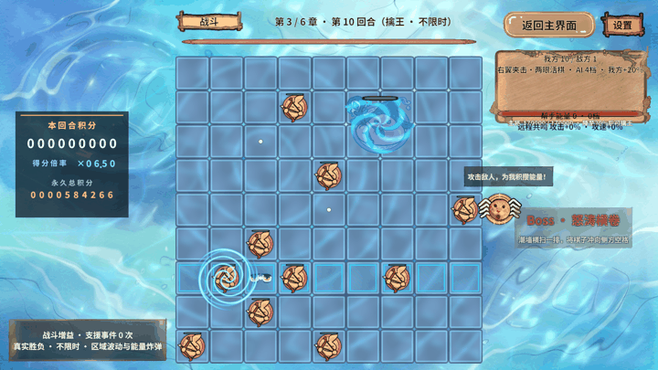
旋涡区域三段切向位移，打散阵形；不越界、不重叠、不丢失棋子身份。
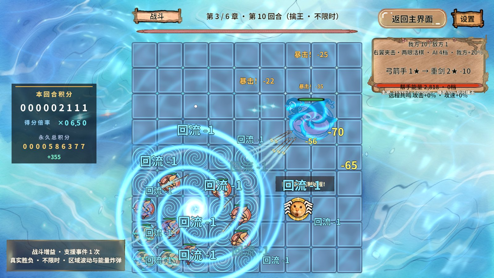
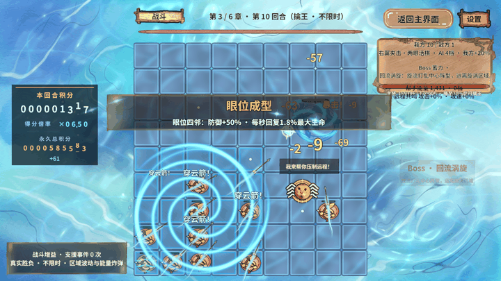
区域吞噬，暂时移出可行动目标4秒后吐回；采用可恢复控制，不直接永久删棋。
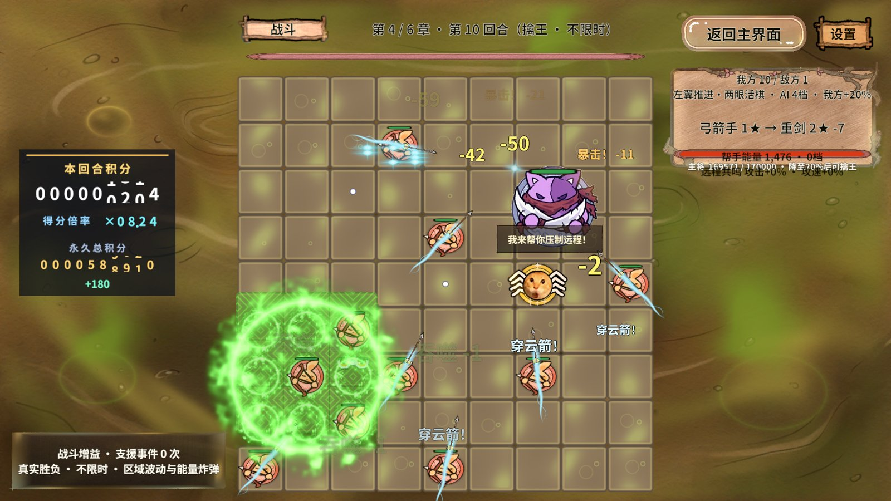
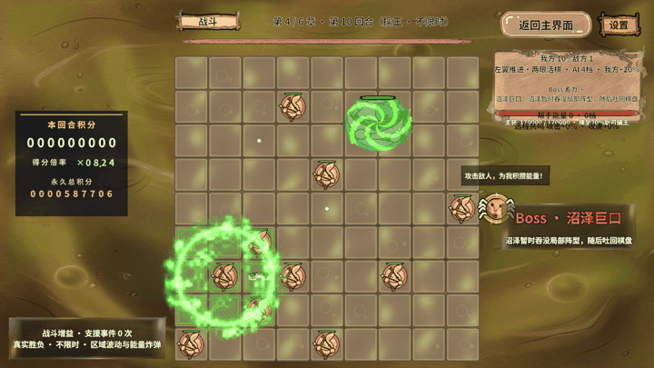
5×5沼泽领域持续5秒，只将远程棋子攻速降至45%；近战不受此攻速减益。
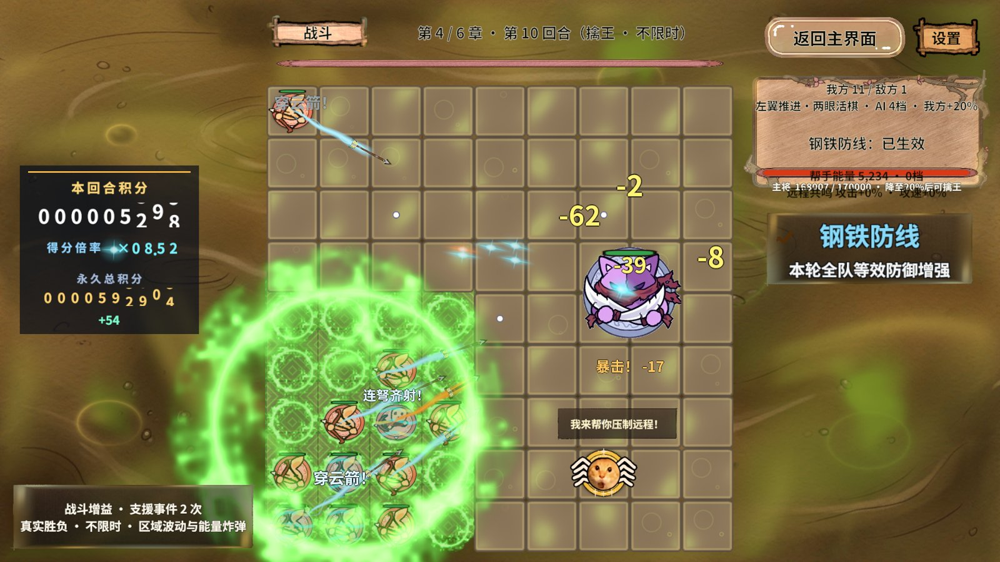
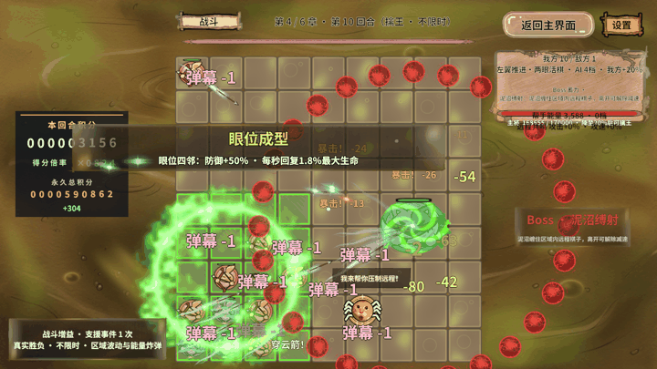
3×3区域冻结2秒，期间不能攻击且不积攒攻击进度，结束立即解冻。
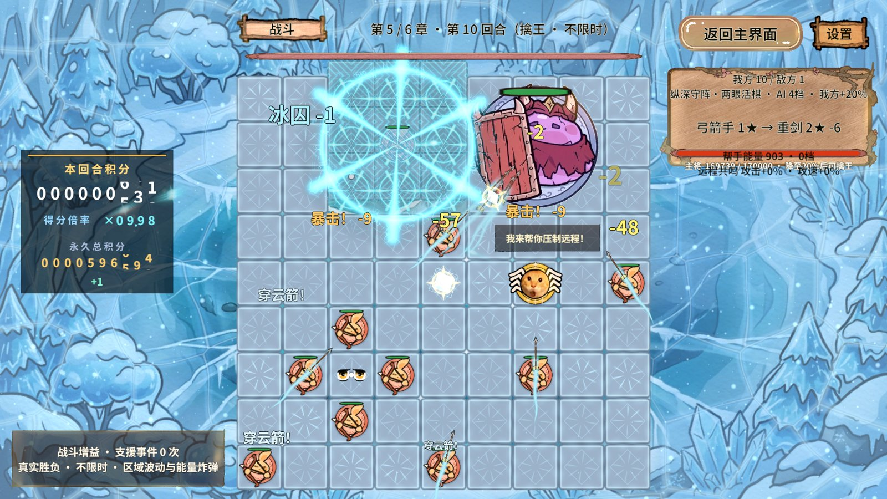
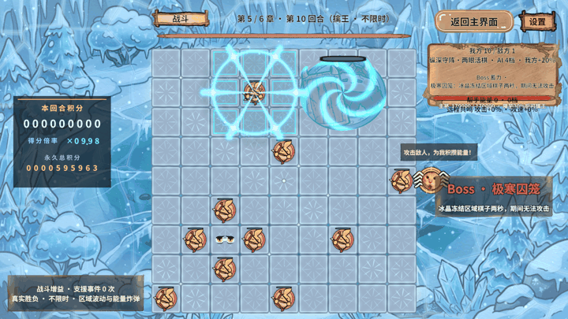
Boss蓄力2.5秒时冰封无敌，随后撤销无敌并对全盘玩家棋子结算爆炸；打断与退出也撤销无敌。
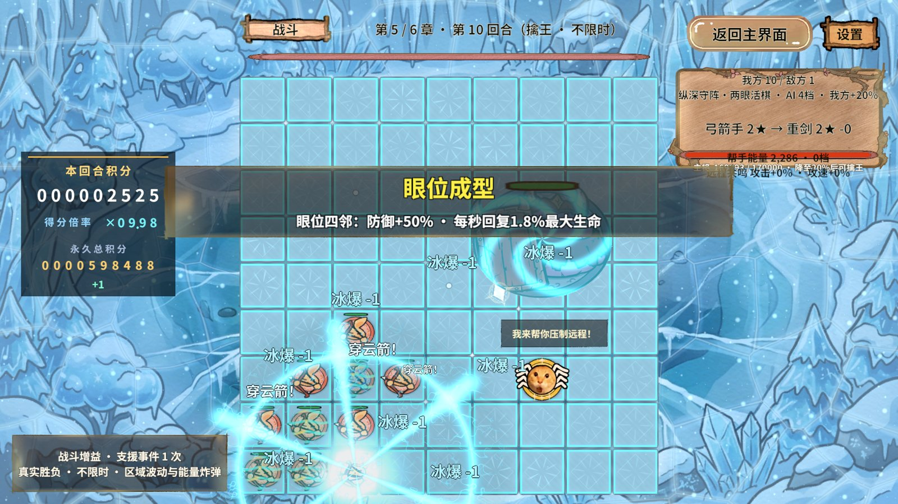
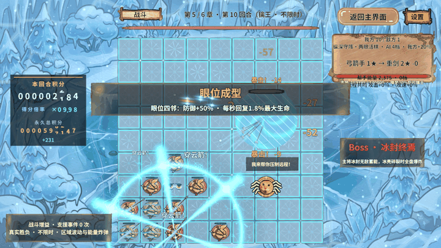
沿目标所在行列画出金色十字，预警后爆炸；中心交点只结算一次，共17格。
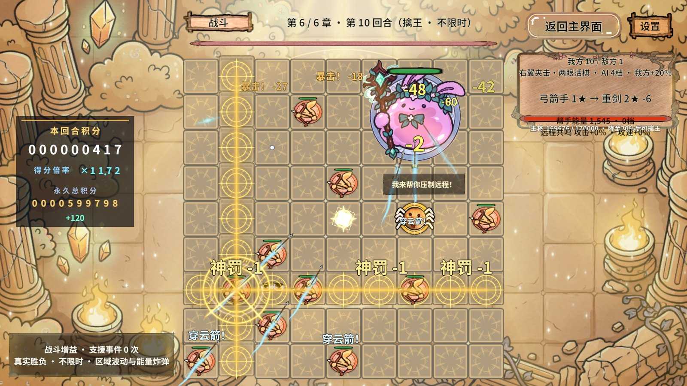
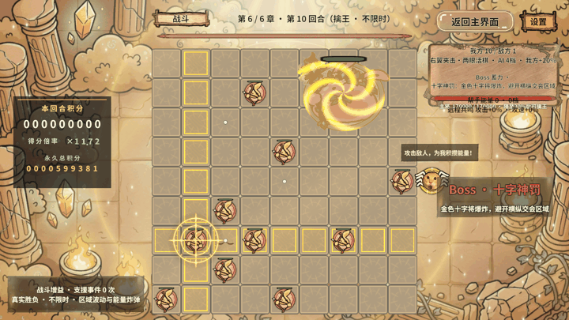
5×5领域持续5秒，攻击降至65%、攻速降至55%；移出区域或领域结束即恢复，叠加取最强而不累乘。
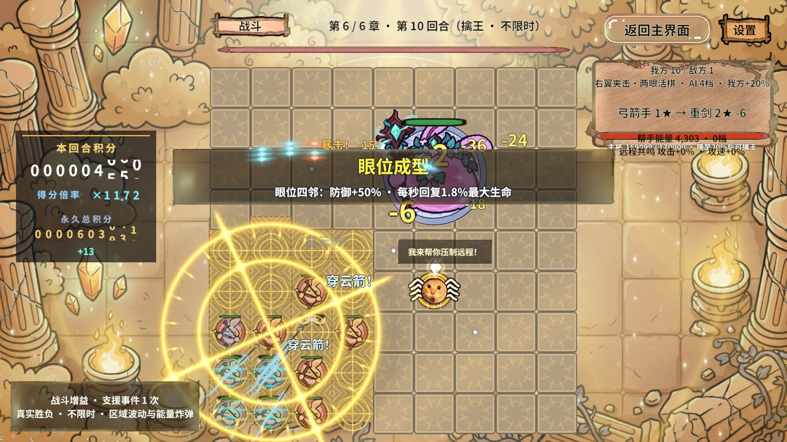
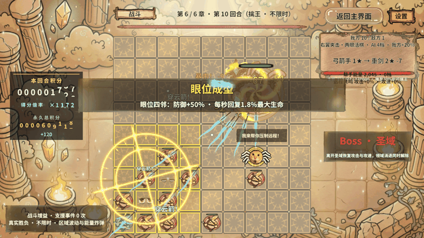
首次图形测试开战早于准备增益发放，入口正确拒绝；测试改为等待PreparationGranted。第二次在第四章返场断言失败，原因是测试按墙钟等待而业务按模拟时间推进。改成等待BattleElapsed并保留45秒墙钟超时后，沼泽确实经历隐藏、4秒后恢复，完整十二招重跑通过。没有缩短技能持续时间或删除断言。
补齐黑洞不透明暗核，修正烈阳烙印主特效跟随A/B/C各段目标，修正冰封爆炸时不再重新显示无敌冰壳。离线报告技能名单改为复制快照，避免后续回合修改已记录的集合。
报告HTML及本地图片链接已静态校验；浏览器安全策略拒绝file://预览，因此未完成网页渲染验收。未验证：独立Player、手机GPU/帧率/零GC、多人输入和所有极端满盘组合。旧增援回归失败仍在，普通回合有3次失败，第四/五章图形Boss战偏长；因此本报告的“通过”只指技能专项、资源与清理，不代表全游戏无缺陷。
结论：现有Revolution门面能够承载30技能状态机、持续状态、三层特效和开发态GM验收，无需修改框架内核。基于提交be1b3caf的工程实践，复用BossAI/BossStates、BattleService.BossAI、BossSkillFxView及既有图形测试契约。
收尾：Play已停止、时间倍率恢复、隔离解除，StartScene活动且dirty=false，AB模式保持原先开启状态。原始JSON、日志和完整PNG位于忽略目录.codex/work/boss-skills-2026-10-29及.codex/work/balance-2026-10-28/boss-skills-2026-10-29-1029；文档只保留HTML和必要截图/GIF，无ZIP。